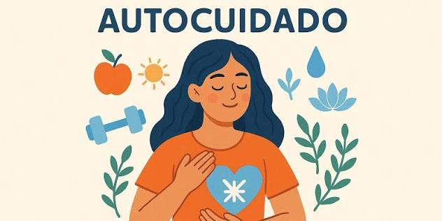

El autocuidado es fundamental para mantener una buena salud física, mental y emocional. Durante la adolescencia es importante desarrollar hábitos saludables, como mantener una alimentación equilibrada, realizar actividad física, descansar adecuadamente y cuidar nuestra higiene personal.
También debemos prestar atención a nuestras emociones, aprender a expresar lo que sentimos, establecer límites personales y buscar apoyo cuando enfrentamos situaciones difíciles. Cuidarnos significa valorarnos, respetarnos y tomar decisiones que favorezcan nuestro bienestar.
Practicar el autocuidado nos permite fortalecer nuestra autoestima, prevenir riesgos y construir un futuro más saludable y responsable.